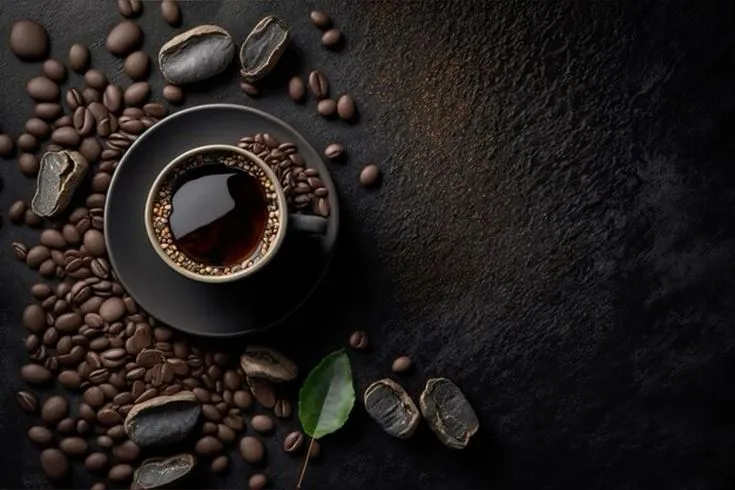

Aroma Andino Canchaque
Tradición, altura y el alma del Alto Piura en cada grano.
Te ofrecemos uno de los mejores cafés del Perú, 100% orgánico y producido en Canchaque, Piura.

«Cosechado entre montañas, neblina y sol norteño, donde el esfuerzo de nuestra tierra se convierte en café orgánico.»